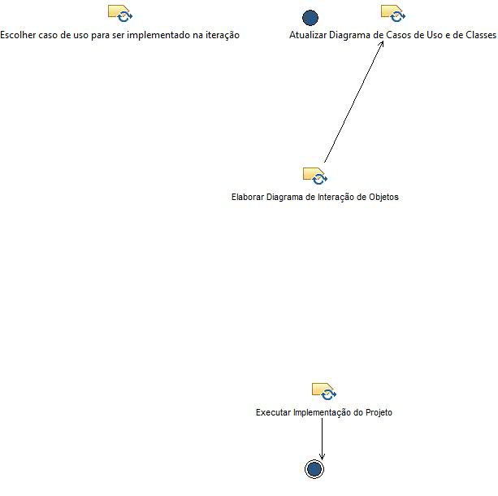
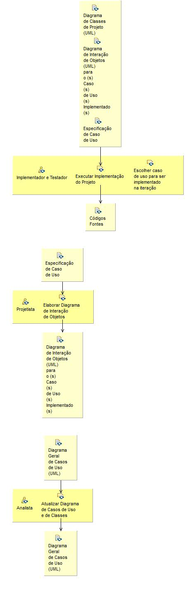

Activity: Análise e Projeto Construção
Os objetivos da disciplina de Análise e Projeto nesta fase são os mesmos da fase anterior.
Description
Work Breakdown Structure
Team Allocation
Work Product Usage
Workflow


Work Breakdown